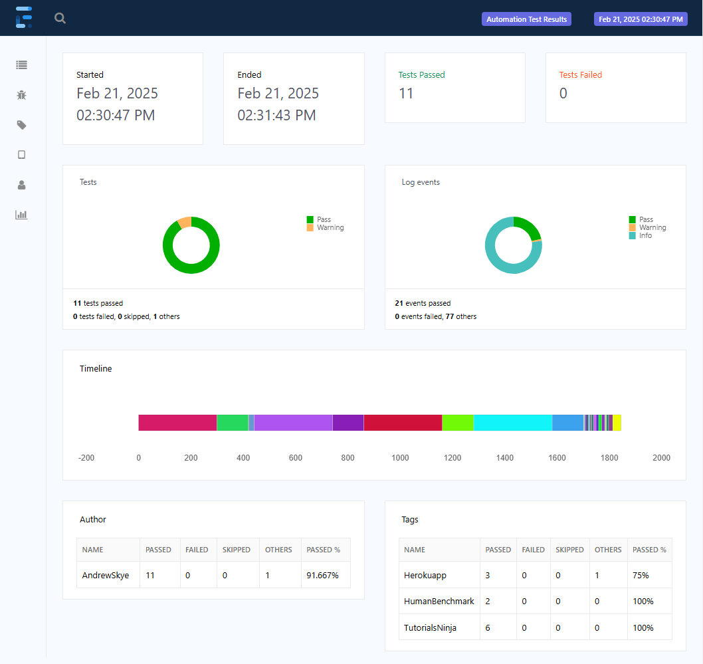
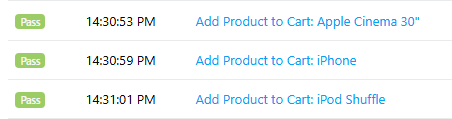

Selenium
an end to end automated web test
About The Project
This project is my personal Selenium playground. It goes through various practice automation sites, runs tests and generates comprehensive test reports.
The entire end to end flow is automated, running on a regularly scheduled basis, allowing users to simply review test results.
Supported with


Table of Contents
Features
💻 Cross-Browser Compatability
Using Selenium WebDriver allows the tests to be run on any supported browser. Currently setup for Chrome, Firefox and Microsoft Edge.
switch (browser) {
case "chrome":
driver = new ChromeDriver();
break;
case "firefox":
driver = new FirefoxDriver();
break;
case "edge":
driver = new EdgeDriver();
break;
}
📊 Extent Reports
Generates comprehensive Extent Reports on every run with detailed logging.

📃 JSON Test Paramatization
Reads through JSON files to quickly customize and execute tests.
AddProductsToCart.json
[
{
"product":"Apple Cinema 30\"",
"radio":"small",
"checkbox":"checkbox 3",
"text":"hello world",
"select":"green",
"date":"2021-05-11",
"qty":"2"
},
{
"product":"iPhone"
},
{
"product":"iPod Shuffle",
"qty":"3"
}
]

—📸 Takes Screenshot
Using TestNG Listeners, any time a test fails we take a screenshot of the failure state and attach it to the test report.
📜 Page Object Model
Uses Page Factory with POM design pattern for clean, re-usable and easy to understand tests.
@Test
public void testTypingGame(ITestContext context) {
HBMainPage mainPage = goToMainPage();
TypingPage typingPage = mainPage.goToTypingPage();
String paragraph = typingPage.getFullParagraph();
int result = typingPage.typeTest(paragraph);
Assert.assertTrue(result > 0, "Typing time displayed as below 0, " + result + "wpm");
}
*Extent Test logging removed from above code snippit
📚 Javadoc API
Fully documented with Javadocs. a link
🔁 Retries
Supports re-running failing tests multiple times when they are flaky
👩👩👦👦 Parallel Test
Runs multiple tests in parallel to speed up execution time
⏱️ Automated Test Execution
Ran on a regular basis through Jenkins, generating new reports daily.
🚀 Custom Test Execution
Can execute on test profiles to run fully customizable tests. Current profiles written can run each website separately or every single test across all websites. https://maven.apache.org/surefire/maven-surefire-plugin/
Samples
TBD
Contact
Andrew Skye - andrew.d.skye@gmail.com
Project Link: https://github.com/ASkye90/SeleniumPractice
Acknowledgments
- Udemy Selenium Java course used to start learning Selenium
- Best-README-Template used as starting framework for this README
-
Basic Selenium Project README inspired formatting for this README